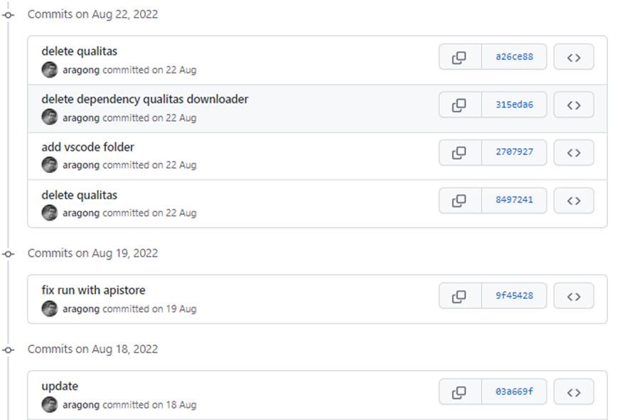
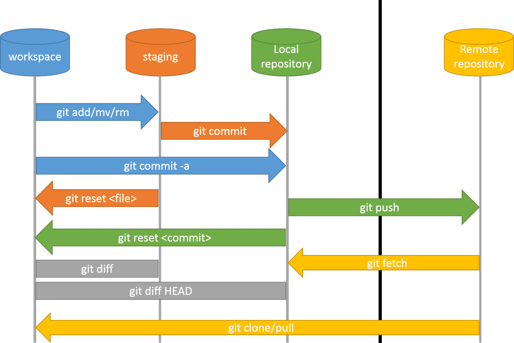

Comandos
Git trabaja como un sistema distribuido, podemos trabajar contra nuestro repositorio sin conectarnos remotamente a GitHub.
init
Iniciamos un nuevo repositorio local. Genera una carpeta oculta llamada .git, que contiene toda la información necesaria para trabajar.
clone
El método clone descarga un repositorio en nuestro equipo. Contiene todo el histórico y referencias hacia el repositorio remoto.
add & commit
El guardado se realiza en dos pasos, primero debemos especificar cuáles son los ficheros que nos interesan, con add los pasaremos a estado staged, posteriormente con commit confirmamos que queremos grabar esos ficheros, y especificaremos un mensaje.
Si utilizamos commit --amend reescribiremos el último commit. Es útil para añadir o quitar ficheros y también podremos modificar el mensaje. Es peligroso porque modifica la historia.
diff
Muestra todas las líneas que han cambiado respecto al commit o tag que le pasemos como parámetro. Veremos cómo era la línea antigua y cómo es la actual.
fetch
Para traernos los cambios del repositorio remoto, pero a diferencia de pull, en este caso no hará el merge de los ficheros, que será un paso que tengamos que realizar nosotros. Si descargamos el main de remoto, nos generará el branch llamado origin/main.
branch
Crea una nueva rama a partir de la actual. Es un nuevo lugar de trabajo. En las ramas haremos los cambios que nos llevaremos a la rama principal main.
checkout
Cambia la rama activa a la que decidamos o incluso a un commit o tag.
merge
Trae los cambios de una rama que especiquemos a la actual, combinando los cambios. Cuando terminemos de realizar los cambios en la rama de desarrollo, iremos a main y desde esa haremos el merge de la rama donde hicimos los avances.
pull / push
Para traernos los cambios del repositorio remoto, utilizamos el comando pull. Descargará la rama especificada y hara un merge de los ficheros, las historias de local y remoto quedarán igualadas.
Cuando queremos enviar las novedades de nuestro repositorio al remoto, utilizaremos el comando push.
Con push --force sobreescribiremos el repositorio remoto con nuestro historial. Importante: No habrá forma de revertirlo, es muy peligroso.
tag
Etiqueta un commit con un nombre que decidamos. Le da mayor relevancia y le podemos asignar un nombre, normalmente el número de versión.
log
Muestra el listado de commits y su información: autor, fecha y mensaje. Muy útil no solo para saber qué cambios ha hecho nuestro compañero sino también cuáles fueron los últimos cambios que hicimos en un proyecto que retomamos.

rm
Elimina el fichero físicamente y a partir del siguiente commit. Importante: No se elimina de la historia, su contenido seguirá accesible en los anteriores commit.
stash
Permite guardar en una pila el estado actual de los ficheros sin realizar un commit. Es útil cuando queremos cambiar de branch sin guardarlos en la historia. si no se guardan con commit o stash, impedirá cambiar de branch. Para recuperar los ficheros guardados utilizaremos stash pop.
revert
Cambia el contenido de nuestros ficheros a como se encontraban en el commit que le pasemos como parámetro. En lugar de eliminar los commit intermedios de la historia, hará uno nuevo.
reset
Si no le pasamos parámetros, limpia la lista de ficheros de stage.
Si le pasamos el parámetro --hard id eliminará los commits hasta llegar a ese, también modificará los ficheros y perderemos los cambios.
Si le pasamos el parámetro --soft id eliminará los commits hasta llegar a ese pero los ficheros no los modificará.
En el siguiente diagrama vemos las diferentes fases en las que se puede encontrar un fichero y sobre cuáles afecta cada comando:
.